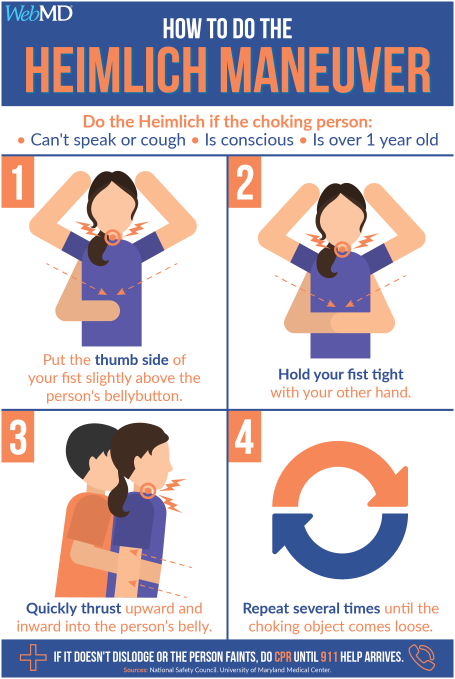

Choking
Key Signs:
- Motioning towards throat or gesticulating without speaking
- Bluish tinge on lips, nail beds, or skin
- Coughing
- Wheezing
What to do if someone is choking but still able to speak, breathe, or cough?
- Encourage the person to keep coughing to try and clear the blockage.
- Be ready to help in case their airway becomes fully blocked or the choking becomes severe.
What to do if someone is choking but is NOT able to speak, breathe, or cough?
- Help immediately because they may lose consciousness.
- Give back blows by standing behind the person. Lean the person forward while supporting their chest.
- Give up to five sharp blows between the person's shoulder blades with the heel of your hand (see below).
- Stop after each blow to check if the blockage has cleared.
- If not, give up to five abdominal thrusts (see below).

How to give abdominal thrusts (Heimlich maneuver 海姆利克急救法)?
- Stand behind the person choking.
- Place your arms around their waist and bend them forward.
- Clench your fist and place it right above the person's belly button then place your other hand on top.
- Thrust both hands backwards into their stomach with a hard, upward movement up to five times.
- If the object is still stuck in their throat, repeat the thrusts.
